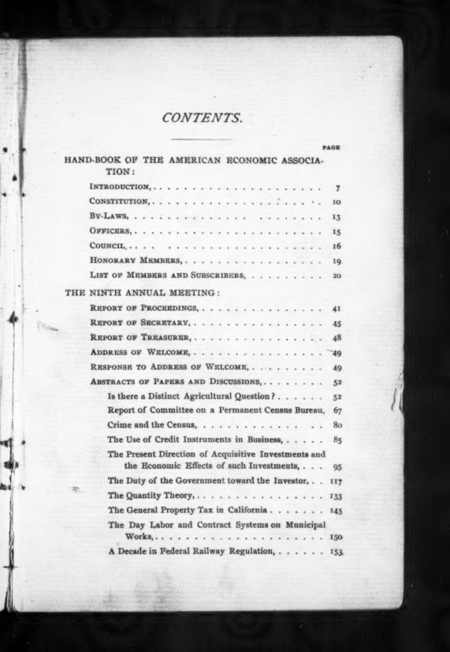

Manual de 1897 e a reunião de Baltimore: poupança, censo e ferrovias
Leitura: 6 min
O suplemento de 1897 traz o manual da associação, com 665 sócios e assinantes, e os resumos da reunião de Baltimore: crise agrícola, censo, cheques, poupança, investidores, moeda, impostos e ferrovias.


Na noite de segunda-feira, 28 de dezembro de 1896, no Levering Hall da Johns Hopkins University, em Baltimore, o presidente da universidade, Daniel C. Gilman, deu as boas-vindas à American Economic Association e destacou um nome na plateia: Henry C. Adams, presidente da associação, o primeiro da lista de Fellows e da de doutores da casa. Começava a nona reunião anual, que foi até 31 de dezembro, com recepção na casa de Theodore Marburg e banquete da associação de comerciantes e industriais da cidade.
O suplemento ao nº 1 do segundo volume dos Economic Studies, de fevereiro de 1897, junta duas coisas. A primeira é o manual da associação de 1897: introdução, estatuto, regimento, dirigentes, Conselho, sócios honorários e a lista de sócios e assinantes. A segunda é o relatório da reunião, com o programa, as decisões do Conselho, as contas e os resumos dos trabalhos e debates. O discurso presidencial de Adams, com a discussão que provocou, saiu na íntegra no nº 1 e não é reproduzido aqui; os demais textos aparecem resumidos, e o relatório registra que os condutores do debate agrícola faltaram por doença.
Como estava a associação?
A introdução lembra que a associação foi fundada em Saratoga, em 9 de setembro de 1885, e diz que ela não representa nenhuma escola de pensamento. A anuidade era de três dólares e a contribuição vitalícia, de cinquenta; bibliotecas recebiam todas as publicações por quatro dólares por ano, ou só os Studies por dois dólares e meio. Adams foi reeleito presidente, com Franklin H. Giddings, E. R. L. Gould e Roland P. Falkner como vice-presidentes, Walter F. Willcox como secretário e Charles H. Hull como tesoureiro. Uma nota na lista de dirigentes registra a morte do ex-presidente Francis A. Walker, em 5 de janeiro de 1897. O Conselho também votou uma moção de congratulações a Herbert Spencer pela conclusão do seu “System of Synthetic Philosophy”.
O que se discutiu em Baltimore?
Na terça-feira, depois do debate sobre o discurso presidencial, a reunião discutiu se havia uma questão agrícola distinta, a partir de sete teses de L. H. Bailey, de Cornell, lidas na sua ausência. À tarde vieram o relatório da comissão sobre um escritório permanente do censo, o trabalho de Falkner sobre crime e censo, o de David Kinley sobre o uso de cheques e o de W. A. Scott sobre a teoria quantitativa da moeda. A quarta-feira inteira foi dedicada aos investimentos: de manhã, para onde ia a poupança, com o ex-secretário do Tesouro Charles S. Fairchild; à tarde, o dever do governo para com o investidor, com Arthur T. Hadley. Na quinta, Carl C. Plehn falou do imposto sobre a propriedade na Califórnia, John R. Commons das obras municipais por administração direta e Harry T. Newcomb de dez anos de regulação federal das ferrovias.
Os números puxaram o debate. Kinley, com respostas de 5.530 bancos sobre os depósitos de 1º de julho, estimou que cheques e instrumentos semelhantes respondiam por 92,5% de todos os negócios e, depois de correções, por 55% a 60% do varejo; vários colegas objetaram que o dinheiro gasto antes de chegar ao banco não aparece nos depósitos. Fairchild mostrou que as caixas econômicas tinham, em 1896, mais de cinco milhões de depositantes e quase US$ 1,91 bilhão em depósitos, e advertiu que dinheiro sacável a qualquer momento agrava os pânicos. No debate sobre ferrovias, Newcomb citou uma frase do comissário Knapp para dizer que a lei proibira o próprio instrumento da concorrência que pretendia preservar.
“O poder de competir é o poder de discriminar” (The power to compete is the power to discriminate)
Adams discordou: no sentido dos economistas ingleses, concorrência é oferecer as mesmas condições a todos, e discriminação é o contrário. A troca, registrada no resumo, mostra o estilo da reunião: textos curtos, seguidos de muitas intervenções, réplica do autor e, às vezes, tréplica.
O que mais há na edição?
O manual reproduz o estatuto, que proíbe a associação de tomar posição partidária, e o regimento, com nove comitês permanentes, de trabalho e transporte a estatística e ensino de economia política. Seguem os membros do Conselho por ano de término do mandato, os sócios honorários estrangeiros, de Alfred Marshall a Léon Walras e Eugen Böhm-Bawerk, e a lista alfabética de sócios e assinantes. O relatório do tesoureiro fecha as contas de 1896 em US$ 4.118,24, e o do secretário recomenda manter o contrato com a Macmillan.
Na minha leitura
Na minha leitura, a reunião de Baltimore é dominada por um tema que hoje chamaríamos de infraestrutura institucional dos mercados. Quase todas as sessões tratam de medir e de garantir: medir o crime, o uso de cheques, a riqueza tributável, a produção do censo; garantir o depósito do poupador, a informação do acionista e a tarifa justa do embarcador. As propostas convergem para publicidade de contas, responsabilidade de diretores e promotores e órgãos públicos permanentes e tecnicamente preparados, e os debates mostram desde cedo a tensão entre confiar na supervisão do Estado e confiar no juízo do próprio investidor, que Hadley resume no fim da sessão da tarde.
Glossário
- Caixa econômica (savings bank)
- banco sem acionistas que recebe pequenas poupanças e as aplica em títulos e hipotecas.
- Associação de construção e empréstimo
- cooperativa em que os sócios poupam em parcelas periódicas e tomam empréstimos para comprar casa.
- Teoria quantitativa da moeda
- doutrina segundo a qual, tudo o mais constante, o nível de preços acompanha a quantidade de moeda.
- Utilidade marginal
- valor atribuído à última unidade de um bem; base da teoria do valor da escola austríaca.
- Instrumentos de crédito
- cheques, saques e ordens que substituem o dinheiro em espécie nos pagamentos.
- Pool ferroviário
- acordo entre ferrovias para dividir tráfego ou receitas, proibido pela lei de comércio interestadual.
- Diluição de capital (stock watering)
- emissão de ações acima do capital efetivamente investido.
Artigos desta edição
- Hand-Book: Introduction — texto institucional (pp. 7–9). Lembra a fundação em Saratoga, em 9 de setembro de 1885, afirma que a associação não representa nenhuma escola e destaca o debate de um dia inteiro sobre investimentos e a comissão que pede ao Congresso um escritório permanente do censo; anuidade de três dólares, vitalícia de cinquenta.
- Constitution — texto institucional (pp. 10–12). Objetivos da associação, entre eles a pesquisa histórica e estatística e a liberdade de discussão econômica sem posição partidária; até 25 sócios honorários estrangeiros; Comitê de Publicações de seis membros.
- By-Laws — texto institucional (pp. 13–14). Funções dos dirigentes e nove comitês permanentes, de trabalho e transporte a estatística e ensino de economia política.
- Officers (p. 15). Henry C. Adams na presidência; Giddings, Gould e Falkner como vice-presidentes; Willcox secretário; Hull tesoureiro; Taussig à frente do Comitê de Publicações; nota sobre a morte de Francis A. Walker em 5 de janeiro de 1897.
- Council (pp. 16–18). Membros do Conselho, por ano de término do mandato, de 1897 a 1899.
- Honorary Members (p. 19). Economistas estrangeiros como Alfred Marshall, Henry Sidgwick, Adolph Wagner, Eugen Böhm-Bawerk, F. Y. Edgeworth, Charles Gide e Léon Walras.
- List of Members and Subscribers (pp. 20–39). Relação alfabética de sócios e assinantes, com sinais para vitalícios, assinantes e honorários.
- The Ninth Annual Meeting: Report of Proceedings — relatório da reunião (pp. 41–45). Programa da reunião no Levering Hall da Johns Hopkins University, de 28 a 31 de dezembro de 1896, e decisões do Conselho: data da próxima reunião delegada ao Comitê Executivo, estudo para fazer coincidir o ano de filiação e o de publicação, congratulações a Herbert Spencer, eleição dos dirigentes e seis novos membros do Conselho.
- Report of the Secretary — Walter F. Willcox (pp. 45–47). Registra 665 sócios e assinantes, com ganho líquido de 20; queda de US$ 329,15 nas vendas e assinaturas, explicada pela cobrança extraordinária de 1895; seis números dos Studies, com 376 páginas; déficit de US$ 462,26; e recomenda manter o contrato com a Macmillan.
- Summary of Treasurer’s Report, 1896 — Charles H. Hull (p. 48). Contas do ano até 23 de dezembro de 1896, com 457 anuidades, total de US$ 4.118,24 e saldo em caixa de US$ 1.083,33, conferidas por D. Kinley e Emory R. Johnson.
- Address of Welcome — Daniel C. Gilman, presidente da Johns Hopkins University (p. 49). Boas-vindas em nome da cidade e da universidade, num momento de atenção nacional aos assuntos monetários, com destaque para Adams, primeiro da lista de Fellows e de doutores da universidade.
- Response to the Address of Welcome — Henry C. Adams (pp. 49–51). Adams diz que a associação, na nona reunião, representa sobretudo análise cuidadosa e investigação honesta, e associa a escolha de Baltimore ao papel da Johns Hopkins na pesquisa original e à hospitalidade da cidade.
- Abstracts: Is There a Distinct Agricultural Question? — teses de L. H. Bailey, Cornell University, e debatedores (pp. 52–67). Bailey, ausente por doença, propõe sete teses: o arrendamento, a absorção de pequenas propriedades e o abandono de fazendas beneficiariam o país; estatísticas de hipotecas pouco dizem; educação, correio rural e bondes elétricos melhorariam a condição do agricultor. W. A. Scott, com dados de dois municípios, de Nova York e Wisconsin, duvida da concentração de terras e vê na queda de preços uma transição penosa, sem remédio além do ajuste. C. S. Walker diz que o agricultor perde porque acumula quatro papéis, proprietário, empresário, capitalista e trabalhador. Crowell aponta a falta de crédito bancário nas regiões agrícolas, onde juros acima de 7% tornam a emissão de notas pouco lucrativa. Seligman afirma que o país deixou de ser o celeiro do mundo diante da concorrência da América do Sul, da Rússia e da Índia. Willcox mostra que a área média das fazendas caiu de 203 acres em 1850 para 134 em 1880 e subiu a 137 em 1890. E. R. Johnson calcula que o frete leva de 30% a 50% do valor do produto agrícola; Shearman critica a tributação; Peters explica as perdas pela subida da margem de cultivo.
- Report of the Committee on a Permanent Census Bureau — Roland P. Falkner, presidente da comissão (pp. 67–79). Texto do memorial enviado ao Congresso pelas comissões da American Economic Association e da American Statistical Association. Aponta três defeitos da organização do censo: o acúmulo de pesquisas num mesmo momento, a falta de continuidade e a pressa com que a máquina é montada. O superintendente não consegue supervisionar mais de vinte volumes, as divisões trabalham isoladas e, no fim de 1896, o censo de 1890 ainda não estava completo. Um escritório permanente distribuiria as pesquisas pela década, manteria pessoal treinado e prepararia cada levantamento com antecedência. O memorial pede que a organização seja criada bem antes de 1º de junho de 1900 e apoia a proposta do Comissário do Trabalho.
- Abstracts: Crime and the Census — Roland P. Falkner, University of Pennsylvania, e debatedores (pp. 80–84). Falkner mostra que a estatística americana de crime conta os presos no dia do censo, enquanto outros países contam condenações. O número de presos depende de duas variáveis, as entradas na prisão e a duração das penas; assim, os condenados a penas longas pesam demais no total, e os delitos leves, que predominam no crime de um ano, quase somem. Penas mais longas em 1880 do que em 1890 fazem as entradas crescerem mais que a população carcerária, e diferenças regionais e entre grupos na duração das penas distorcem as comparações. A proposta é contar todas as pessoas recebidas nas prisões durante o ano do censo, tarefa que exigiria um escritório permanente. No debate, Frederick H. Wines diz que os dados de 1850 a 1870 não merecem confiança, conta que o número de presos nas cadeias de Illinois em 1870 foi um palpite e defende estatísticas judiciais, como na Inglaterra, a cargo do departamento de justiça.
- Abstracts: Credit Instruments in Business — David Kinley, University of Illinois, e debatedores (pp. 85–94). Kinley usa respostas de 5.530 bancos sobre os depósitos de 1º de julho, separados por varejistas, atacadistas e outros. Nos depósitos, cheques e instrumentos semelhantes eram 68% no varejo, 95% no atacado e 92,5% no total; com correções, o varejo não ficaria abaixo de 55% a 60%, e o conjunto, de 75% a 80%. A proporção era a mesma de 1892, o que contraria a ideia de recuo do crédito; o uso parece saltar por faixas de população. Os cheques liberam moeda, mas parte dela vai para as reservas. No debate, Stuart Wood, Hollander e Gunton objetam que o varejista paga despesas com o dinheiro do caixa, que nunca chega ao banco; Commons cita uma cidade de 7.000 habitantes em que os cheques eram de 10% a 30% das receitas das lojas e cerca de 60% dos depósitos. Kinley responde que, mesmo descontando US$ 35 milhões diários de gasto no varejo, os instrumentos de crédito seriam 55% das transações.
- Abstracts: What Is the Present Direction of Acquisitive Investments? What Are the Economic Effects of such Investments? — Charles S. Fairchild, ex-secretário do Tesouro, e debatedores (pp. 95–116). Fairchild mostra que as caixas econômicas passaram de 278 bancos e 693.870 depositantes em 1860 para 988 bancos e 5.065.494 depositantes em 1896, com depósitos de US$ 1.907.156.277 e média de US$ 376,50. Como o depositante vê o dinheiro como sacável a qualquer momento, os saques em massa agravam os pânicos; ele sugere investimento direto, associações de construção e empréstimo e menos estímulo legal à dívida. Giddings propõe atrair o pequeno poupador para empresas produtivas sólidas, com caixas econômicas ajudando a diversificar riscos. Joseph F. Johnson lê o crescimento dos depósitos como sinal de adversidade, não de prosperidade. Homans compara 1,1 família por casa em Filadélfia com 3,82 em Nova York; Macfarlane atribui a preferência pela caixa à incerteza do emprego desde 1873; Greene e Shearman discutem o endividamento e as concessões; Gould cita uma companhia de habitação com ações de dez dólares, em que 73% dos acionistas tinham menos de US$ 500. Fairchild conclui sugerindo proibir a dívida em títulos das corporações.
- Abstracts: The Duty of the Government toward the Investor — Arthur T. Hadley, Yale University, e debatedores (pp. 117–133). Hadley propõe três medidas: publicidade das contas, proibição de contratos de diretores com as próprias empresas e responsabilidade civil e criminal especial dos promotores pelas promessas dos prospectos, como no período de incubação alemão. No exemplo dele, diretores podem contratar consigo mesmos por US$ 1 milhão uma obra que custa US$ 500 mil. Skipwith Wilmer lista cinco causas de perdas e pede que o capital declarado corresponda ao real. Fairchild, ex-procurador-geral de Nova York, diz que a inspeção oficial foi uma armadilha e prefere relatórios detalhados com responsabilidade estrita, sem prescrição. Hamilton S. Corwin defende contabilidade ferroviária uniforme sob a Interstate Commerce Commission. Folwell, Marburg, Rowe, Taussig e C. S. Walker insistem na administração da lei e na moral dos negócios; Crowell lembra que Nova York concedeu mais de 1.600 cartas a ferrovias em setenta anos. Hadley encerra: reformas do governo e dos investidores devem andar juntas.
- Abstracts: The Quantity Theory — W. A. Scott, University of Wisconsin, e debatedores (pp. 133–145). Scott ataca a defesa da teoria quantitativa feita por Walker. A lei da oferta e da procura, diz, descreve como as forças do valor agem, mas não revela a sua natureza. O padrão de valor tem de ser uma mercadoria útil em usos comuns, cujo valor depende da utilidade marginal nesses usos; o volume da moeda só afeta os preços indiretamente, ao retirar ouro desses usos ou devolvê-lo. A depreciação do papel inconversível dependeria também do crédito do governo, da opinião pública e da conveniência do comércio. No debate, Waite relaciona circulação e falências de 1856 a 1896; Kinley distingue meio de troca e moeda-padrão; Taussig parte de uma economia sem crédito, em que a teoria vale, e conclui que no longo prazo os preços tendem a acompanhar o estoque de metal; Hadley elogia a ideia de fluxo; Gardner e Green leem o texto como reformulação em termos de utilidade marginal ou como ajuste pelo crédito. Scott responde que o argumento vale também sob a teoria do custo de produção.
- Abstracts: The General Property Tax in California — Carl C. Plehn, University of California (pp. 145–150). Plehn descreve o imposto geral sobre a propriedade na Califórnia, cuja carga crescia cerca de duas vezes mais rápido que a população. Os imóveis rurais eram avaliados a cerca de 64% do valor real e os lotes urbanos a 55%; em 1890, a avaliação per capita dos residentes em fazendas era de US$ 959, contra US$ 599 nos lotes urbanos. A propriedade pessoal escapava: só 12% do imposto recaía sobre ela, e os bancos declaravam de cinco a dez vezes mais dinheiro e créditos do que o avaliador encontrava com os indivíduos. De 1880 a 1896, o valor avaliado dos imóveis subiu 125%, e o da propriedade pessoal, 10%. A tributação da hipoteca separada do imóvel era repassada ao devedor: empréstimos sem imposto custavam 6% ou menos, e hipotecas, 8% ou mais. O conselho estadual de equalização só podia alterar condados inteiros, o que acentuava a sobretaxa do imóvel sem hipoteca.
- Abstracts: The Day Labor and Contract Systems on Municipal Works — J. R. Commons, Syracuse University (pp. 150–152). Commons compara obras públicas feitas por contrato com as feitas por administração direta, com trabalhadores contratados pelo departamento de obras. Londres mantinha equipe permanente desde 1892; Denver construiu um grande esgoto em 1895, e Minneapolis, um reservatório. Segundo o depoimento quase unânime que reuniu, a obra municipal tinha melhor qualidade, porque operários e capatazes passavam a fiscalizar o material. O custo também seria menor, salvo quando inflado por salários de favor, assistência ou política: a cidade pagava de 40% a 60% mais ao trabalhador não qualificado, mas economizava a fiscalização, de cerca de 5% do custo do contrato, e os extras, litígios e reparos. Em Massachusetts, porém, o salário legal de US$ 2 por nove horas punha a cidade em desvantagem. Londres fazia ruas de 15% a 20% mais barato que os empreiteiros. A administração direta também daria emprego mais regular e preferência à mão de obra local.
- Abstracts: A Decade in Federal Railway Regulation — H. T. Newcomb, U. S. Department of Agriculture, e debatedores (pp. 152–161). Newcomb avalia dez anos da lei de comércio interestadual pelo critério de quanto reduziu as discriminações tarifárias. Os meios previstos eram um processo sumário de queixas, enfraquecido pela interpretação judicial, a publicidade das contas e a concorrência perpétua entre ferrovias. As discriminações entre indivíduos ficaram menos frequentes, mas talvez mais danosas, porque passaram a favorecer só os grandes embarcadores; as que atingem mercadorias e cidades inteiras pouco mudaram. Citando o comissário Knapp, conclui que a lei tentou preservar a concorrência proibindo os atos que a tornam efetiva, e pede o fim da cláusula contra os pools e a liberdade de consolidação. No debate, Adams sustenta que concorrência e discriminação se excluem; Hadley critica a mistura de funções judiciais e consultivas da comissão; Crowell cita o caso da comissão ferroviária do Texas, em que reduzir tarifas abaixo do nível remunerador foi julgado inconstitucional; Adams atribui as dificuldades da comissão sobretudo à resistência dos tribunais.
Fontes
- Hand-Book: Introduction (pp. 7–9). Internet Archive (número completo, PDF)
- Constitution (pp. 10–12). Internet Archive (número completo, PDF)
- By-Laws (pp. 13–14). Internet Archive (número completo, PDF)
- Officers (p. 15). Internet Archive (número completo, PDF)
- Council (pp. 16–18). Internet Archive (número completo, PDF)
- Honorary Members (p. 19). Internet Archive (número completo, PDF)
- List of Members and Subscribers (pp. 20–39). Internet Archive (número completo, PDF)
- The Ninth Annual Meeting: Report of Proceedings (pp. 41–45). Internet Archive (número completo, PDF)
- Report of the Secretary (pp. 45–47). Internet Archive (número completo, PDF)
- Summary of Treasurer’s Report, 1896 (p. 48). Internet Archive (número completo, PDF)
- Address of Welcome (p. 49). Internet Archive (número completo, PDF)
- Response to the Address of Welcome (pp. 49–51). Internet Archive (número completo, PDF)
- Abstracts: Is There a Distinct Agricultural Question? (pp. 52–67). Internet Archive (número completo, PDF)
- Report of the Committee on a Permanent Census Bureau (pp. 67–79). Internet Archive (número completo, PDF)
- Abstracts: Crime and the Census (pp. 80–84). Internet Archive (número completo, PDF)
- Abstracts: Credit Instruments in Business (pp. 85–94). Internet Archive (número completo, PDF)
- Abstracts: What Is the Present Direction of Acquisitive Investments? What Are the Economic Effects of such Investments? (pp. 95–116). Internet Archive (número completo, PDF)
- Abstracts: The Duty of the Government toward the Investor (pp. 117–133). Internet Archive (número completo, PDF)
- Abstracts: The Quantity Theory (pp. 133–145). Internet Archive (número completo, PDF)
- Abstracts: The General Property Tax in California (pp. 145–150). Internet Archive (número completo, PDF)
- Abstracts: The Day Labor and Contract Systems on Municipal Works (pp. 150–152). Internet Archive (número completo, PDF)
- Abstracts: A Decade in Federal Railway Regulation (pp. 152–161). Internet Archive (número completo, PDF)
- Número completo digitalizado (domínio público): Internet Archive.
Documento em domínio público (EUA, publicado antes de 1931), via JSTOR Early Journal Content e Internet Archive. Resumo e comentário do autor deste site, sem afiliação com a American Economic Association. Encontrou um erro? Escreva: a correção é publicada no próprio texto, com data.
← ES 6 · Adams, 1896: sem propriedade industrial não há liberdade industrial ES 8 · George, 1897: quem financiava os saloons de Chicago? →